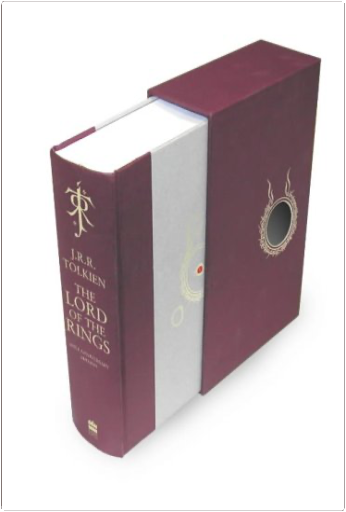

the hobbittolkien  Poor Bilbo Baggins! An unassuming and rather plump hobbit (as most of these small, furry- footed people tend to be ), Baggins finds himself unwittingly drawn into adventure by a wizard named Gandalf and 13 dwarves bound for the Lonely Mountain, where a dragon named Smaug hordes a stolen treasure. Before he knows what is happening, Baggins finds himself on the road to danger. Wizards, dwarves and dragons may seem the stuff of children's fairy tales, but The Hobbit is in a class of its own—light-hearted enough for younger readers, yet with a dark edge guaranteed to intrigue an older audience. In the best tradition of the archetypal hero's quest, Bilbo Baggins sets out on his fateful journey a callow, untested soul and returns—tempered by hardship, danger and loss—a better man—er, hobbit. the lord of the ringstolkien This deluxe slipcased volume contains the definitive version of the text, featuring for the very first time full-colour facsimiles of pages from the Book of Mazarbul, illustrations by Tolkien that he intended for inclusion in the 'Bridge of Khazad-dum' chapter. Also appearing are previously unpublished family trees and two full-size fold-out maps.  dragon ball, tome 1akira toriyama dragon ball, tome 1akira toriyama Les Dragon Ball, boules de cristal magiques, offrent à celui qui les détient la possibilité de réaliser tous ses voeux. Bien sûr la quête que mène Sangoku et ses amis pour les réunir n'est pas sans obstacles : tournois et combats rythment chaque tome de cette série-culte pour les jeunes adolescents. Scénarios et dialogues assez simples centrés sur la confrontation entre les différents protagonistes. Les textes se résument parfois aux cris des combattants mais le succès de la série dépasse largement cela, pour en faire un véritable mythe auprès de la jeune génération. —Nadia Picard |


 Made with Delicious Library
Made with Delicious LibraryNancy, State zipflap congrotus delicious library Thomas, Julien